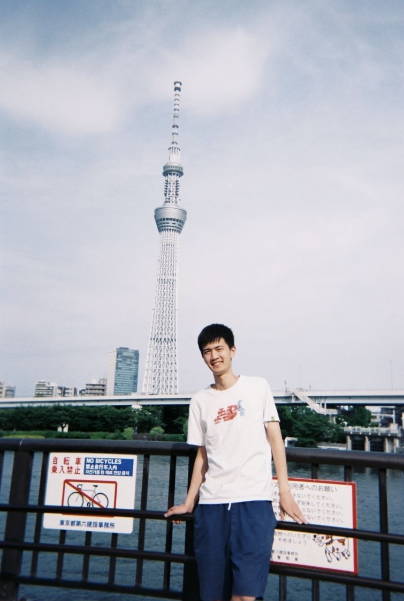

Bingguang Hao
I am an M.S. student at the
University of Electronic Science and Technology of China (UESTC) .
I am currently a research intern at Team Qwen, Alibaba .
Previously, I worked at
Seed, ByteDance ,
Inclusion AI, Ant Group and
Team ERNIE, Baidu .
My research interests lie in Natural Language Processing ,
Tool Use , and AI Agents .
I am particularly interested in improving the reasoning, function-calling,
and real-world robustness of large language model agents.
Feel free to contact me by email :-)
Email /
Google Scholar

Updates
Recent
Aug 2026
Released the Qwen3.8-Max technical report.
Aug 2026
HardGen accepted by EMNLP 2026.
Jul 2026
Joined Team Qwen, Alibaba as a Research Intern.
University of Electronic Science and Technology of China
University of Electronic Science and Technology of China
Team Qwen, Alibaba
Project Seed, ByteDance
Inclusion AI, Ant Group
Team ERNIE, Baidu
Research (* indicates equal contribution)
Technical Report
Qwen3.8-Max CODING & COWORK
Seed2.1 AGENTIC PRODUCTIVITY
FunReason-MT MULTI-TURN TOOL USE
Accepted Papers
HardGen HARD TOOL-USE SAMPLES
HardGen: Generating Hard Samples for Tool-use Agents Bingguang Hao , Zengzhuang Xu, Yuntao Wen, Xinyi Xu, Quanen Sun, Yang Liu, Zihao Huang, Tong Zhao, Long Chen, Dong Wang, Yicheng Chen, Maolin Wang, Cunyin Peng, Xiangyu Zhao, Chenyi Zhuang, Ji Zhang.
EMNLP 2026
BalanceSFT BALANCED FUNCTION CALLING
BalanceSFT: Improving LLM Function Calling with Balanced Training Signals and Data Hardness Bingguang Hao , Zengzhuang Xu, Yuntao Wen, Maolin Wang, Long Chen, Dong Wang, Yicheng Chen, Cunyin Peng, Xiangyu Zhao, Jinjie Gu, Chenyi Zhuang, Ji Zhang.
ACL 2026
JanusMM MULTIMODAL CONVERSATIONS
E-Bench LLM EASE-OF-USE
Function CSUR SURVEY
Function Calling in Large Language Models: Industrial Practices, Challenges, and Future Directions Maolin Wang, Yingyi Zhang, Bowen Yu, Bingguang Hao , Cunyin Peng, Yicheng Chen, Wei Zhou, Jinjie Gu, Chenyi Zhuang, Ruocheng Guo, Wanyu Wang, Xiangyu Zhao.
ACM Computing Surveys · Tutorials of PAKDD 2026
Parts & CVPR 2026 HIGHLIGHT
Global OOD DETECTION
Rényi UNCERTAINTY
{kind=link}